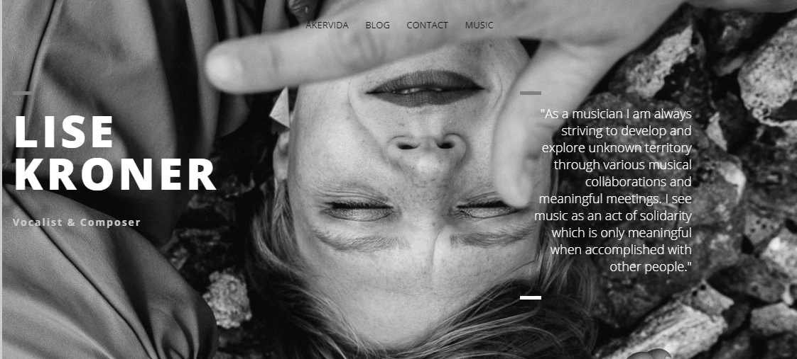

-About
I'm a UI/UX designer specilized in web and iOS application development.
I have a broad skillset and is the perfect all around designer/develeper.
Text-only masonry block.

Intervjuer iOS app.
This app handles video recording and user profiles and accounts and has a internal chat room using firebase.
This app is intended as a tool for develepers in ther recruting process, and a way for faster results as a jobseeker by recording video awnsers as you apply for a jobb. The app handlas all your data and notfies you if there's intrest from the employer.

Showcase of Intervjuer
This website is a showcase
of a ios and react web app that
works with firebase.
This page is intended for explaining the concept
Some of my fravorite programing langues are:
Swift, Python, HTML5 & CSS3, Javascript, React.js. Arduino
iBeacon Weather app
An expiremental ibeacon app that tests monitering mode. The idea is to have a beacon in the hallway and get notified about the weather on my way out from home.

Website created for musician Lise Kronér
Website created for musician Lise Kronér

Café Knus Coffee card

Freelance work
Feel free to contact me if you want to discus working together.I do freelance work, complete design of websites and iOS applications.
I also do physical prototyping, design of hardware and iteractions with sensors.
QB
Python parse script.